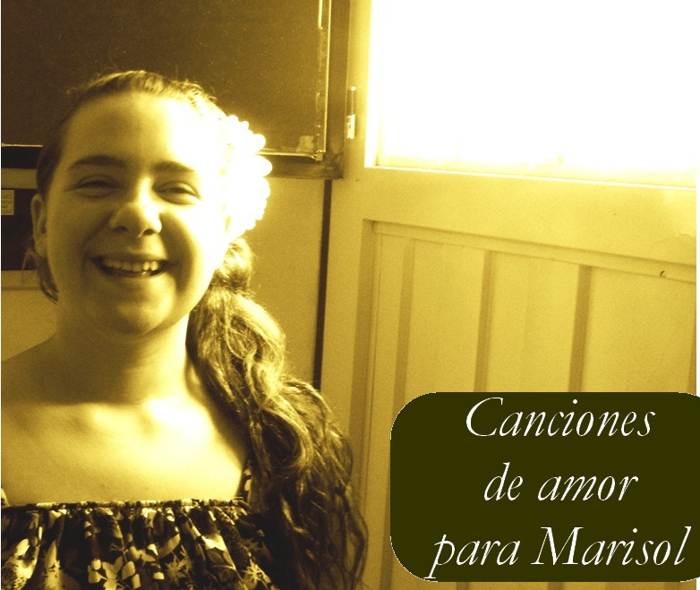

Sorry, your browser doesn't support html5!
En la vereda
Viajo
Espacio de amor
Tu Nombre
Marisol
Un amor de papel
Prestame
Un mundo de sueños
Bolsa de palabras
Yo también
Saludo
Dedicado a Marisol Allois (1/02/2009. Concepción del Uruguay)